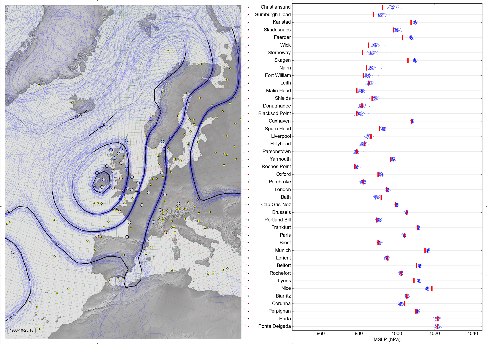

Validating reanalyses against DWR data¶

{kind=link}
On the left: MSLP Contours for 20CR v2c, observations assimilated (yellow circles), DWR observations not assimilated (larger circles, coloured by deviation from reanalysis: blue - observation lower, red - observation higher. On the right: MSLP observation (red line), and ensemble values (blue dots) at the location of each DWR station. Source
- Validating 20CR2c against DWR data: October 1903 station scatterplot
- Validating 20CR2c against DWR data: October 1903 station error plot
- Validating 20CR2c against DWR data: October 1903 monthly scatterplot
- Validating 20CR2c against DWR data: October 1903 error-error plot
- Validating 20CR3 against DWR data: October 1903 station scatterplot
- Validating 20CR3 against DWR data: October 1903 station error plot
- Validating 20CR3 against DWR data: October 1903 monthly scatterplot
- Validating 20CR3 against DWR data: October 1903 error-error plot
- Validating CERA20C against DWR data: October 1903 station scatterplot
- Validating CERA20C against DWR data: October 1903 station error plot
- Validating CERA20C against DWR data: October 1903 monthly scatterplot
- Validating CERA20C against DWR data: October 1903 error-error plot
- Validating 20CR2c against DWR data: February 1953 station scatterplot
- Validating 20CR2c against DWR data: February 1953 station error plot
- Validating 20CR2c against DWR data: February 1953 monthly scatterplot
- Validating 20CR2c against DWR data: February 1953 error-error plot
- Validating 20CR3 against DWR data: February 1953 station scatterplot
- Validating 20CR3 against DWR data: February 1953 station error plot
- Validating 20CR3 against DWR data: February 1953 monthly scatterplot
- Validating 20CR3 against DWR data: February 1953 error-error plot
- Validating CERA20C against DWR data: February 1953 station scatterplot
- Validating CERA20C against DWR data: February 1953 station error plot
- Validating CERA20C against DWR data: February 1953 monthly scatterplot
- Validating CERA20C against DWR data: February 1953 error-error plot